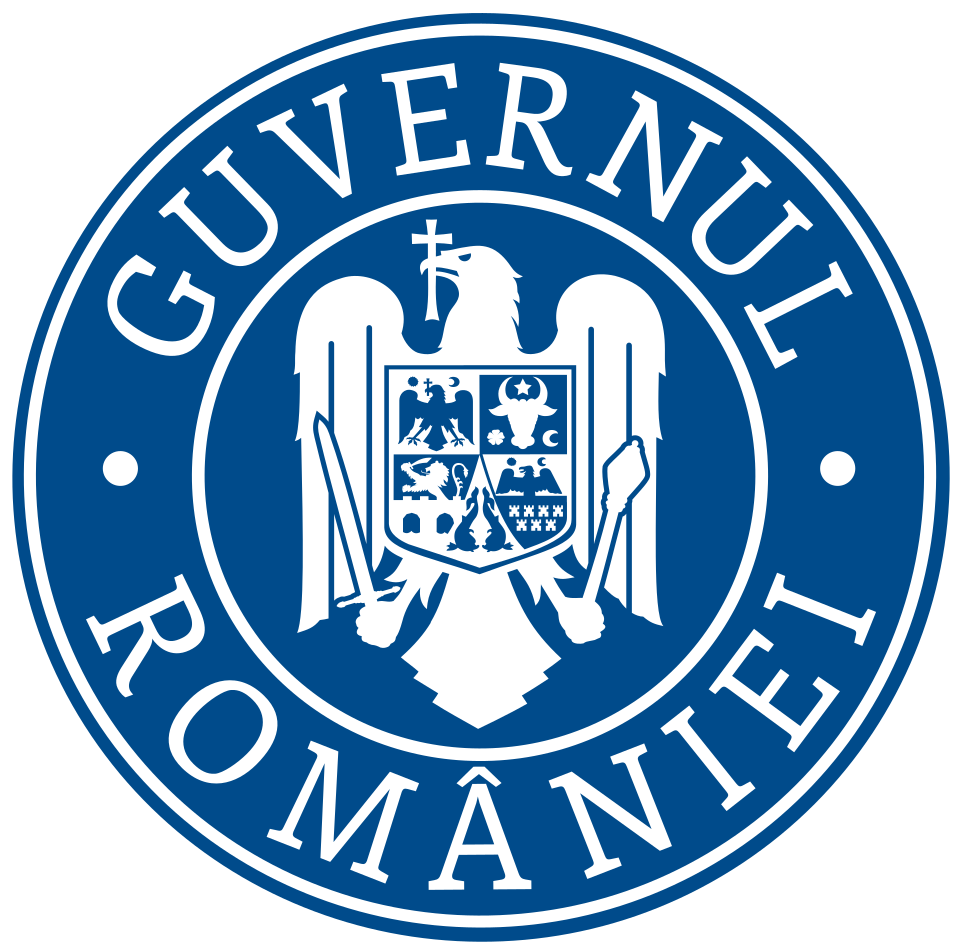
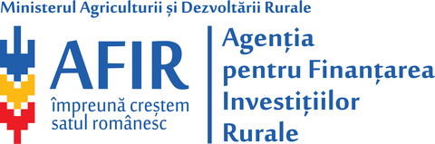

Un singur partener pentru tot ce ține de IT-ul firmei tale.
Gândim sistemul cap-coadă
Nu doar un site: date, utilizatori, backup și creștere — planificate de la început.
Tehnologii moderne, rapide
Aplicații care se încarcă instant pe telefon și costuri de găzduire predictibile.
Securitate implicită
Criptare, acces controlat și date găzduite în UE, conform GDPR.
Explicații pe înțelesul tău
Recomandări clare, estimări realiste și documentație fără jargon.
cerere de ofertă
de prezentare
al serverului
în Uniunea Europeană
Hai să vorbim despre firma ta.
Spune-ne pe scurt ce ai nevoie. Revenim în cel mult 24 de ore cu pașii recomandați și o estimare orientativă — fără niciun cost.
Vezi serviciile complete și trimite-ne un mesaj direct de pe telefon.




Proiect finanțat prin FEADR — Planul Strategic PAC 2023–2027, măsura LEADER.
Beneficiar: AXION VISION SRL · Cod proiect F36010806109241703226
Tehnologie care lucrează pentru afacerea ta.
Consultanță IT, site-uri și mentenanță pentru firme din România — de la primul audit până la funcționarea de zi cu zi.